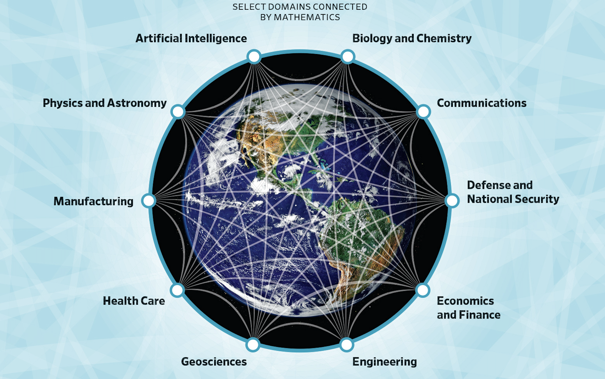

Quantitative Reasoning
1015SCG
Lecture 1

Quantitative Reasoning
Welcome!

People
- NA Convenor: Dr Michelle Ward
- Na Lecturer: Dr Amal Succarie
- GC Convenor/Lecturer: Dr Juan Carlos Ponce Campuzano
- Workshop demonstrators: Llewyn Randall, Jordan Holdorf
Not just another Maths course
- Relate the use of mathematics to your own scientific studies and interests

Image source: National Academies
Not just another Maths course
- Use computational tools to perform mathematical calculations

Image source: Mapple Soft.
Not just another Maths course
- Construct and critique quantitative scientific arguments

Image source: An Introduction to Scientific Argumentation
Not just another Maths course
- Communicate scientific arguments effectively in writing

Not just another Maths course
- Construct suitable mathematical models of real-world phenomena

|

|
| \(T(t)=\left(T_0-T_m\right) e^{-kt} + T_m\) | $\ds P(t) = \frac{\theta P_0 e^{rt}}{\theta-P_0+P_0e^{rt}}$ |
Not just another Maths course
- Solve problems related to mathematical models of real-world phenomena
\[ \rho \left(\frac{\partial \v}{\partial t} + \v \cdot \nabla \v \right) = -\nabla p + \mu \nabla^2 \v + \F, \quad \nabla \cdot \v = 0. \]
Fluid simulation by Amanda Ghassaei 🔄 (Reset/Re-start)
Not just another Maths course
- Relate the use of mathematics to your own scientific studies and interests
- Use computational tools to perform mathematical calculations
- Construct and critique quantitative scientific arguments
- Communicate scientific arguments effectively in writing
- Construct suitable mathematical models of real-world phenomena
- Solve problems related to mathematical models of real-world phenomena
Navigating the course site

|
Navigating the course site
|
|
Do especially check:
|
How the course works
- Pre-recorded videos
- Lecture Notes
- In-person lectures
- Face-to-face workshops (in even weeks, mandatory and marked)
- PASS sessions
What if you need help?
|
Course stuff
|
Bigger stuff
|
Assessment
|
|
|||||||||||||||||||||
Workshop Tasks - 25%
- Workshops in Even weeks only - 6 in total
- Report writing task throughout all workshops - marked component
- The marks will only be granted during the workshop
- If you have a valid reason to miss the workshop apply for deferred assessment until next workshop within 3 days and provide supporting documentation (NOT the extension). Do the task at home and present it for marking to your demonstrator during the next workshop.
What do you need for workshops?
- Device with working Excel and Word (not online!)
- Office available for all students - instructions
- The marks will only be granted during the workshop
- Basic Excel knowledge - nice beginners' guide
Employability Task A and B - 5%
- Part A: Identify vital Maths skills and key topics (week 3)
- Part B: Evidence your skills and plan the way forward (week 9)
Full details in Canvas → Modules → Employability Tasks
Maths & Inference and Scientific Critiquing Tasks
-
Maths and Inference Task - 30% (week 7)
Full details in Canvas → Modules → Maths and Inference Task
- Scientific Critiquing Task - 35% (week 11)
Full details in Canvas → Modules → Scientific Critiquing Task
Why QR?

Example - attendance vs grades
Question: Is there a relationship between the course attendance and the grades?

- How would you approach answering this questions?
- What do we need to answer it?
Example - attendance vs grades
Question: Is there a relationship between the course attendance and the grades?
|
|
Example - attendance vs grades
Research results: Better attendance leads to better success.

Source: Kassarnig V, Bjerre-Nielsen A, Mones E, Lehmann S, Lassen DD (2017) Class attendance, peer similarity, and academic performance in a large field study. PLoS ONE 12(11): e0187078. doi.org/10.1371/journal.pone.0187078
Why quantitative reasoning?
To answer scientific questions
- Quantitative: the arguments involve numbers
- Reasoning: we want to take a scientific approach
In this course, you will learn
- Why and how mathematics is important to seemingly non-mathematical sciences
- How to use mathematical methods to answer scientific questions
- How to present those answers
Quantitative Reasoning
Source: Elrod, Susan. 2014. Quantitative Reasoning: The Next “Across the Curriculum” Movement. Peer Review 16 (3).
Examples
- Vaccines
Image source: mRNA vaccines - What they are and what they are not
Examples
- Corona virus

Examples
- Climate change

Image source: Earth pollution global warming and heat
Examples
- Green energy
Image source: Wind turbine solar panel alternative energy source
Examples
- Elections

Image source: How Voter Turnout Varies Around the World
Course Topics
- Maths (weeks 2-5): Numbers and data, Inferring from data, Functions
- Critical Thinking, Logical Arguments, Approximations (weeks 6-8)
- Communicating science and scientific writing (weeks 9-10)
- (Big) Data Science (week 11)
What will we look at? - Maths
- Numbers and data
- Ratios, related rates, linear relations
- Inference from data sets
- Functions we use to represent data
What will we look at? - Science
-
Communicating science:
- How do we structure a scientific argument? (how do I write up my own scientific findings)
- How do we critique a scientific argument? (how do I work out whether I agree with someone else's)
- How do we present scientific data? (why are pie charts so terrible?)
-
Problem posing and problem solving:
- Converting word problems into mathematical problems
- Getting approximate answers (eg how much water do we flush down the toilet each year?)
-
Data Science:
- Working with large data sets
- Deeper inference from data sets
Schedule Part I
|
|
Schedule Part II
|
|